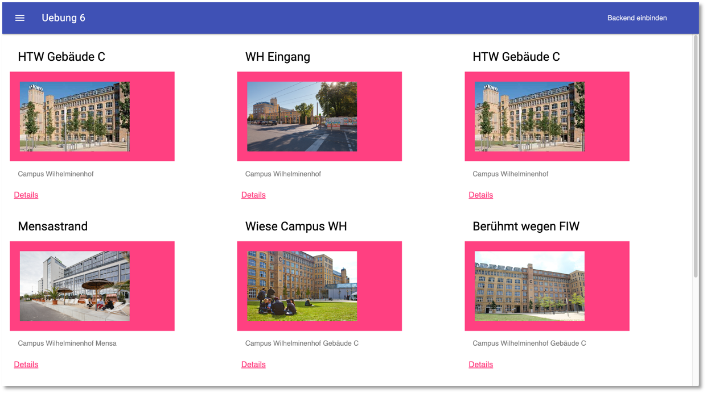

Übungen¶
Übung 1 (Grundgerüst)¶
Übung 1
- In der ersten Übung geht es "nur" darum, das Grundgerüst zu verstehen. Arbeiten Sie dazu diesen Abschnitt durch. Sie werden feststellen, dass sich die meisten Anweisungen (insb. im
HTML-Code) auf Material Design Lite beziehen. - Um zu erkennen, was einen Material Design Lite-Bezug hat (und somit nicht wirklich wichtig ist), ändern Sie das Grundgerüst so, dass Sie nicht Material Design Lite, sondern Bootstrap verwenden. Werfen Sie also Material Design Lite komplett raus und ersetzen es vollständig durch Bootstrap. Löschen Sie die
material.min.jsaus dempublic/js-Ordner. - Starten Sie am besten damit, diese drei Zeilen aus den beiden
index.html-Dateien zu löschen:<link href="https://fonts.googleapis.com/css?family=Roboto:400,700" rel="stylesheet"> <link rel="stylesheet" href="https://fonts.googleapis.com/icon?family=Material+Icons"> <link rel="stylesheet" href="https://code.getmdl.io/1.3.0/material.blue_grey-red.min.css"> - Fügen Sie stattdessen den CSS-Link und das JS-Bundle aus https://getbootstrap.com/docs/5.0/getting-started/introduction/ ein.
- Sie können ja versuchen, dass es möglichst ähnlich aussieht:

Übung 2 (Web App Manifest)¶
Übung 2
- Erweitern Sie Ihre Anwendung (oder das Grundgerüst) um ein Web App Manifest. Verwenden Sie dazu am besten den pwa-asset-generator.
- Die Anwendung soll in dem Moment installiert werden, wenn die Nutzerin das erste Mal auf den
+-Button klickt. Das heißt, es wird dasbeforeinstallprompt-Ereignis ausgelöst und die Behandlung dieses Ereignisses sorgt dafür, dass Sie die Anwendung genau dann installieren, wenn Sie das erste Mal den+-Button klicken:
- Hinweise und Hilfestellungen finden Sie z.B. hier oder im Skript (enthält weitere Links).
Übung 3 (Promises und Fetch API)¶
Übung 3
- Clonen Sie sich hier die Anwendung für Übung 3. Wechseln Sie in den Ordner und öffnen Sie die Übung in Ihrer IDE. Lesen Sie die README.MD.
-
In der Übung üben wir Promises und die Fetch API. Öffnen Sie die Datei
public/src/js/app.js. Die Übung besteht aus 3 Teilen:- Teil 1: führen Sie ein
fetch()als GET nachhttps://jsonplaceholder.typicode.com/posts/1aus (siehe https://jsonplaceholder.typicode.com). Lassen Sie sich dieResponseauf die Konsole ausgeben. Wenden Sie dann nochjson()an und schauen sich das erzeugte Objekt an (lassen es ebenfalls auf der Konsole ausgeben). Übergeben Sie dentitlean dasoutput-Element (<p id="output"></p>) aus derpublic/index.html. - Teil 2: führen Sie ein
fetch()als POST nachhttps://jsonplaceholder.typicode.com/postsaus. Beachten Sie das Format des zu sendenden JSON-Objektes (Eigenschaftentitle,bodyunduserId). Das JSON-Objekt wird zurückgesendet. Geben Sie einen oder mehrere Werte aus diesem JSON in dasoutput-Element aus. - Teil 3: bauen Sie einen Fehler in die Anfrage (z.B. falsche Url) und behandeln Sie diesen Fehler mit einer Ausgabe auf die Konsole. Lesen Sie dazu die Kommentare in der
app.js.
- Teil 1: führen Sie ein
-
Hinweise und Hilfestellungen finden Sie im Skript unter Promises und die Fetch-API.
Übung 4 (MongoDB Cloud Atlas und Compass einrichten)¶
Übung 4
Wir richten unsere Entwicklungs-Infrastruktur, insbesondere die MongoDB ein, die wir benötigen, um eine Frontend-Backend-Datenbank-App zu erstellen.
-
MongoDB Atlaseinrichten:-
Es ist nicht notwendig, die MongoDB lokal zu installieren. Wenn Sie es doch tun wollen, dann wählen Sie den MongoDB Community Server. Es ist aber, insbesondere für ein späteres Deployment ratsam, die Cloud-Lösung MongoDB Atlas zu verwenden. Registrieren bzw. loggen Sie sich ein und erstellen Sie sich einen M0-Cluster, z.B.
IKT-PWA, wie im folgenden Bild: -
Erstellen Sie eine Nutzerin und wählen Sie die Authentisierungsmethode. Sie können die Account-Passwort-Lösung oder das X.509-Zertifikat wählen. In der Vorlesung zeige ich die Verwendung mithilfe des X509-Zertikats.
-
Schauen Sie sich unter
Connect→Driversan, wie Sie in Node.js eine Verbindung zur Datenbank herstellen können.
-
-
MongoDB Compasseinrichten-
Laden Sie MongoDB Compass herunter und installieren es.
-
Stellen Sie eine Verbindung zu Ihrer
MongoDB Atlasher. -
Erstellen Sie eine Datenbank (z.B.
htwinsta) und eine Collection (z.B.posts). -
Sie können auch schon einen Datensatz hinzufügen, wenn Sie möchten. Dann sollte es Bei Ihnen wie im folgenden Bild aussehen:

-
-
Postmaninstallieren:-
Postman ist eine Anwendung, um Schnittstellen (Application Programming Interface - API), die das Backend bereitstellt, zu entwickeln und zu testen. Sie finden Postman unter postman.com. Wir beschränken uns auf den Postman API Client.
-
Laden Sie das Tool herunter und installieren es. Rufen Sie Postman auf und geben in das Eingabefeld
https://postman-echo.com/getein. Lassen Sie die Auswahl links daneben aufGETund klicken auf denSend-Button. Es erscheint folgendes Bild:
-
Neben der
GET-Anfrage sind folgende weitere Anfragen HTTP-Anfragen möglich:POST- sendet Daten zur Verarbeitung an den WebserverPUT- lädt existierende Daten (eine Datei) auf den ServerPATCH- ändert Daten (eine Datei), ohne - wie beiPUT- diese vollständig zu ersetzenDELETE- löscht die angegebenen Daten auf dem Server
-
-
Node.jsinstallieren:- Node.js ist eine JavaScript-Laufzeitumgebung für einen Server. Node.js reagiert auf Ereignisse und antwortet asynchron. Das bedeutet, dass die Ausführung einer Ereignisbearbeitung nicht zum Blockieren der Laufzeitumgebung führt, sondern nebenläufig weitere Ereignisse eintreffen können, die ebenfalls asynchron behandelt werden.
- Laden Sie sich hier Node.js herunter und installieren es.
-
Paketmanager
npm:- Mit der Installation von
node.js, installieren Sie auch den Paketmanagernpm(siehe npmjs). -
Sie können testen, ob die Installation von
nodeundnpmerfolgreich war, indem Sie im Terminal (Windows-Nutzerinnen bitte als Terminal die GitBash verwenden) eingeben:node --versionSollte etwas, wie
v14.20.0ausgeben undnpm --versionsollte etwas, wie
9.1.2ausgeben. Achten Sie darauf, dass Sie eine gerade Versionsnummer vonnode.jsinstallieren (also 14 oder 16, nicht 15)!
- Mit der Installation von
Übung 5 (Backend)¶
Übung 5
-
Ergänzen Sie das in Backend erstellte Backend um folgende Endpunkte:
POST /registrationundPOST /login
Beiden Endpunkten soll ein JSON in der Form
{ "email": "test@test.de", "password": "testpassword" }im
bodydes Requests übergeben werden. Der erste Punkt registriert die Nutzerin und mit dem zweiten Endpunkt soll überprüft werden, ob die Nutzerin bereits existiert und das Passwort stimmt. Verwenden Sie zum Verschlüsseln des Passwortes in der MongoDB das bcrypt-Paket. Um ein Passwort zu verschlüsseln, nutzen Sie diehash()-Funktion (oderhashSync()):bcrypt.hash(myPlaintextPassword, saltRounds, function(err, hash) { // Store hash in your password DB. });Um ein Passwort zu überprüfen, nutzen Sie die
compare()-Funktion (odercompareSync()):// Load hash from your password DB. bcrypt.compare(myPlaintextPassword, hash, function(err, result) { // result == true (myPlaintextPassword == hash) or // result == false (myPlaintextPassword != hash) });Achten Sie darauf, dass eine E-Mail nur einmal verwendet wird, d.h. bei der Registrierung müssen Sie zunächst prüfen, ob es noch keinen Datensatz mit der angefragten
emailgibt. -
Erstellen Sie sich dazu eine neue Collection
users(SchemaUser).
Übung 6 (Frontend)¶
Übung 6
- Clonen Sie sich hier die Anwendung für Übung 6.
- Lesen Sie die README.MD](https://github.com/jfreiheit/IKT-Uebung6)
- Öffnen Sie das Projekt in Ihrer IDE und implementieren Sie die
app.js. Die Aufgabe ist dort in den Kommentaren beschrieben.

Übung 7 (Kamera und Geolocation + Map)¶
Übung 7
- Verwenden Sie Kamera und Geolocation in Ihrem Projekt.
- Lassen Sie Ihre Geolocation mithilfe von OpenLayers anzeigen.
Übung 8 (IndexedDB)¶
Übung 8
- Im Abschnitt IndexedDB haben wir uns mit der Verwendung der In-Browser-Datenbank IndexedDB vertraut gemacht.
- In dem dortigen letzten Abschnitt Löschen einzelner Einträge haben wir in der
db.jseine FunktiondeleteOneData(st, id)geschrieben, die einen einzelnen Datensatz aus der IndexedDB mit der übergebenenidlöscht. - Implementieren Sie in der
db.jseine FunktiondeleteByTitle(st, title), die den Datensatz (oder die Datensätze) löscht, der (oder die) in demtitle-Attribut den der Methode alstitleübergebenen String enthält. Z.B. soll aus dem Datensatz{id: 1, title: "first post", location: "Berlin", image: "/9j/4AA...UgP/9k="} {id: 2, title: "second post", location: "Wilhelminenhof", image: "/9j/4AA...VY/9k="} {id: 5, title: "fourth post", location: "Gebaeude C", image: "/9j/4AA...KOX/9k="} {id: 10, title: "HTW aus der Luft", location: "Campus WH von oben", image: "/9j/4AA...9z//2Q=="} {id: 11, title: "Wilhelminenhofstraße", location: "Campus WH Eingang", image: "/9j/4AA...U9D/9k="}- bei Aufruf von
deleteByTitle('posts', 'second')der zweite Datensatz mit derid: 2gelöscht werden, - bei Aufruf von
deleteByTitle('posts', 'post')sollen die ersten drei Datensätze (mitid:1,id:2undid:5) gelöscht werden.
- bei Aufruf von
Tipps: Mit der Methode getAllKeys() ermitteln Sie z.B. alle Schlüssel (id) der Datensätze und mit der Methode get(key) erhalten Sie den zum Schlüssel zugehörigen Wert.